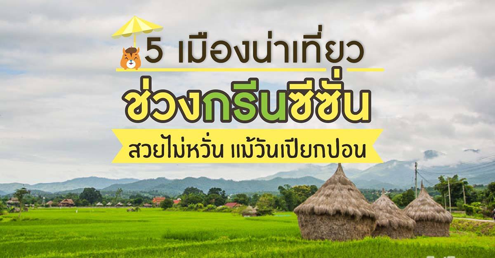

ที่เที่ยวหน้าฝน : 5 เมืองน่าเที่ยวช่วงกรีนซีซั่น สวยไม่หวั่น แม้วันเปียกปอน

1. ปาย จ.แม่ฮ่องสอน
ปาย เมืองท่องเที่ยวสุดโรแมนติกในจังหวัดแม่ฮ่องสอนที่ติดหูเรามาเนิ่นนาน การเที่ยวปายในหน้าฝน คือฤดูกาลท่องเที่ยวที่สวยงามที่สุด เพราะสายฝนที่ชุ่มฉ่ำจนกระทั่งจางหายระเหยเป็นไอจะทำให้ปายกลายเป็นเมืองในสายหมอกอย่างแท้จริง


2. ปัว จ.น่าน
ปัว อำเภอเล็กๆกลางหุบเขาที่มีเสน่ห์อย่างบอกไม่ถูก พื้นที่ส่วนใหญ่เต็มไปด้วยทุ่งนาล้อมรอบ อากาศดี ผู้คนก็น่ารัก เหมาะสำหรับคนที่กำลังมองหาจังหวัดพักผ่อนสบายๆ ชิลๆ สัมผัสธรรมชาติ วิถีชีวิต บรรยากาศ และความเรียบง่ายของชาวบ้านในพื้นที่อย่างใกล้ชิด นักท่องเที่ยวที่มาปัวส่วนใหญ่จะชอบไปชมวิวที่ร้านกาแฟบ้านไทยลื้อและบนวัดภูเก็ตในตอนเช้า

3. แม่แจ่ม จ.เชียงใหม่
แม่แจ่มเป็นอำเภอเล็กๆ ที่โอบกอดโดยขุนเขา มีวัฒนธรรมที่งดงาม และวิถีชีวิตที่เรียบง่าย แม่แจ่มเป็นเมืองสงบและนิ่งไร้สารปรุงแต่งใดๆ มีธรรมชาติที่อุดมสมบูรณ์ วัดวาอารามเก่าแก่อันทรงคุณค่า และไฮไลท์ที่สำคัญทีจะอดพูดถึงไม่ได้นั้นคือหน้าขั้นบันไดที่บ้านป่าบงเปียง สถานที่ท่องเที่ยวยอดนิยมในช่วงฤดูฝน ส่วนมากนิยมมาพักค้างคืนที่โฮมสเตย์ในหมู่บ้าน ตื่นเช้ามารับอากาศบริสุทธ์ เหมาะสำหรับคนที่อยากใช้ชีวิตแบบช้าๆ ปั่นจักรยานข้างๆทุ่งนาเป็นที่สุด

4. จ.เพชรบูรณ์
ที่นี่ถือได้ว่าเป็นที่ตั้งของผืนป่าและอุทยานแห่งชาติขนาดใหญ่หลายแห่งของประเทศไทย ทั้งทุ่งแสลงหลวง ทุ่งหญ้าสะวันนาเมืองไทย เขาค้อ ภูทับเบิก และภูหินร่องกล้า ที่คุณสามารถเห็นหมอกบางๆ บนยอดทุ่งหญ้าและเทือกเขาอยู่ไกลๆในยามเช้าของช่วงปลายฝนต้นหนาวได้ตลอดเส้นทางท่องเที่ยวตั้งแต่เดือนก.ค.ยาวนานไปจนถึงต.ค. เรียกว่ามองไปทางไหนก็มีแต่ทุ่งหญ้าและต้นไม้สีเขียวขจีแสนสบายสุดสายตา

5. แก่งกระจาน จ.เพชรบุรี
บนยอดเขาพะเนินทุ่ง อุทยานแห่งชาติแก่งกระจาน จังหวัดเพชรบุรี สถานที่ชมทะเลหมอกใกล้กรุงฯที่ไม่ว่าจะหน้าไหนฤดูอะไรก็ดูสวยและน่าเที่ยวอยู่เสมอ คุณจะได้เห็นทะเลหมอกที่มีให้ชมตลอดทั้งปี ไม่ว่าจะเป็นช่วงฤดูร้อน หรือฤดูฝนที่ทะเลหมอกจะทั้วหนาและชุ่มฉ่ำมากเป็นพิเศษ